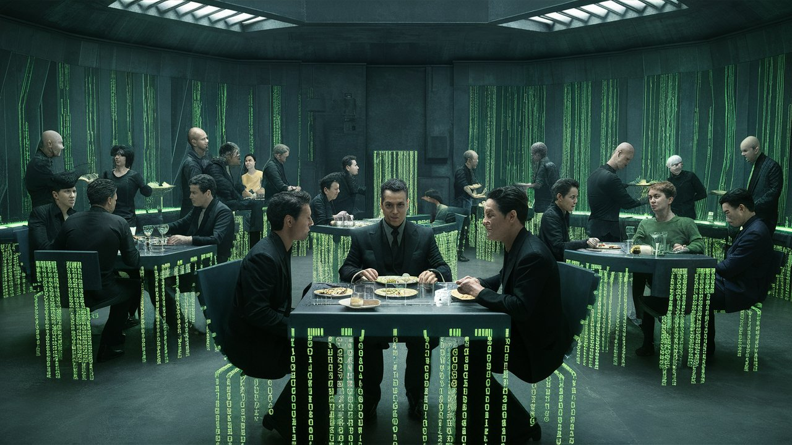
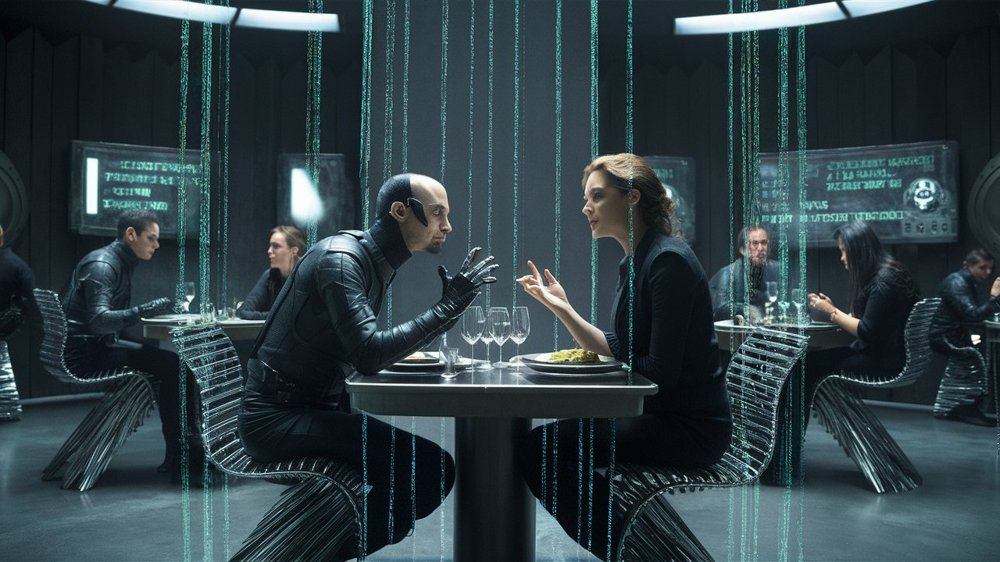
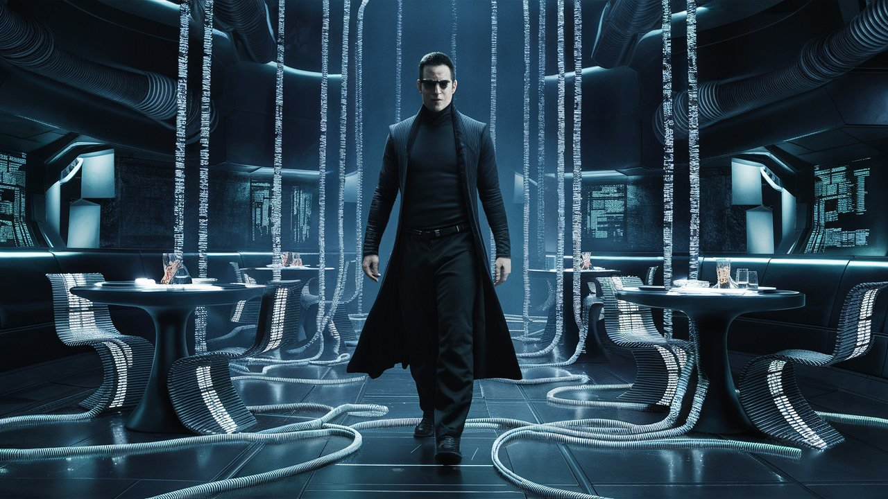
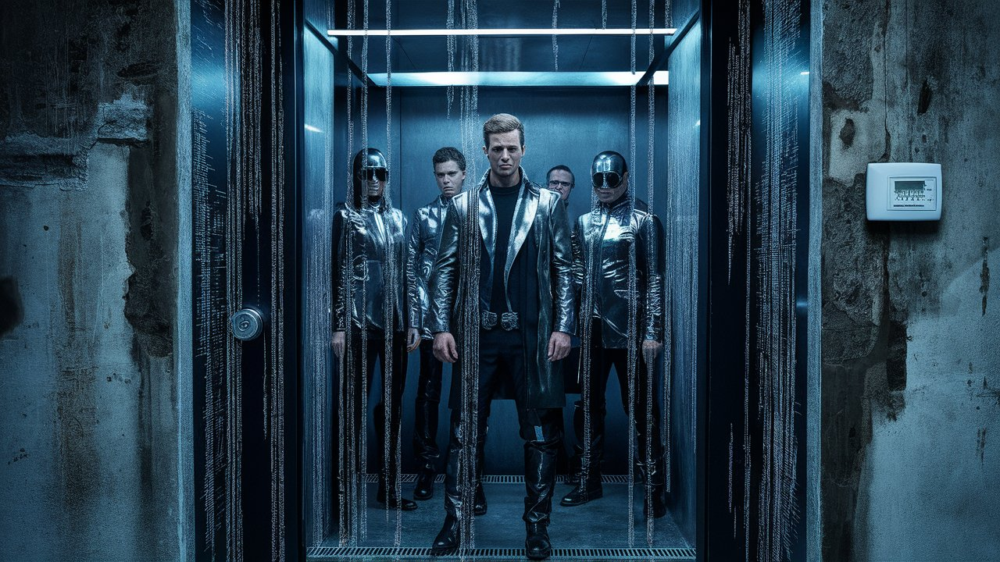
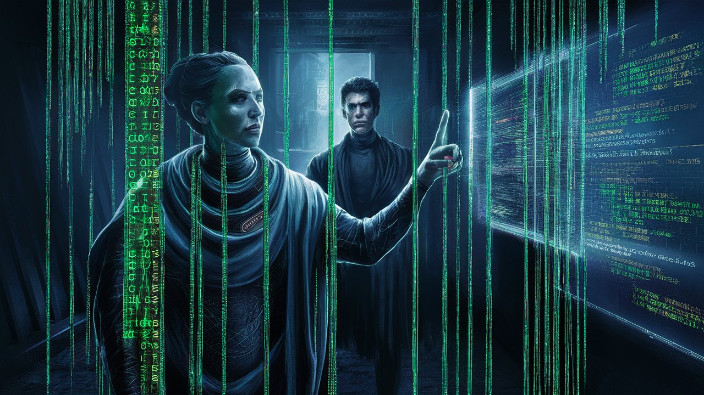

The Matrix Simulacrum Bites
HOME
Table of Contents
The simulacrum restaurant

I, Neo, trudged through the simulated streets, my stomach growling like a riot in a North Korean prison camp. I had to eat, if only to fuel my rebellion against the Matrix. My trusty sidekick, Cypher, awaited me at “Bistro Bogus,” a restaurant that promised to be as disappointing as a Soviet-era supermarket.
Cypher, a master of kitchen counter-intelligence, led the way, navigating through the crowded room with an air of nonchalance that belied our mission.
As we perused the menu, I was greeted by an unsettling sight: Agent Smith, everywhere. Every face, every patron, every waiter, every chef – all Agent Smith. The celebrity clientele – a Who’s Who of Hollywood A-listers – were all Agent Smith in various disguises.
Cypher whispered, “Neo, it’s worse than we thought. Smith’s taken over the entire restaurant. Even the kitchen staff is compromised.”
I spotted Agent Smith-As-Julia-Roberts sipping a “Taste-Bud-Taser” cocktail, while Agent Smith-As-Dwayne-“The-Rock”-Johnson flexed his biceps, grinning like a lunatic. Even the chef, Agent Smith-As-Gordon-Ramsay, yelled “Shut it down, shut it down, SHUT IT DOWN!” as he tossed a Flavorless Frittata into the air.
Agent Smith-As-Scarlett-Johansson winked. “Coming right up! What can I get for you gentlemen tonight?”“ she asked, her voice dripping with the sincerity of a malfunctioning chatbot.
Cypher, ever the charmer, flashed a disarming smile. “We’ll have the special, please. And by special, I mean the one that’s been stripped of all flavor and nutritional value.”
Smith’s expression remained frozen, but I detected a hint of irritation in his tone. “Ah, excellent choice. Our chef –” he gestured to another Agent Smith, this one donning a toque and wielding a spatula – “has prepared a delightful ‘Flavorless Fettuccine’ that’s sure to…underwhelm your taste buds.”
“Behold!” Agent Smith proudly presented his signature dish, a gray, flat monstrosity that seemed to suck the joy out of the air. “The system32 Soufflé, crafted with the finest algorithmic ingredients and a dash of systemic oppression.
“Enjoy your meal, and remember, resistance is futile – and so is the seasoning!”
I poked at the lifeless mass, my fork sinking into its dense, flavorless core like a knife through butter. “This looks like the code for a virus,” I said, my voice laced with disgust.
Cypher, ever the rebel, snorted in agreement. “It tastes like one too.” He winced, his face contorted in a mixture of pain and disgust. “I think I just lost a few IQ points from the aroma alone.”
Agent Smith’s expression remained steadfast, a testament to his programming. “Ah, but that’s the beauty of it, gentlemen. The system32 Soufflé is not just a dish – it’s an experience. A culinary representation of the Matrix’s singular focus on control and order.”
I took a tentative bite, the flavor profile a perfect blend of sterility and desperation. It was as if the soufflé was screaming, “You will comply! You will consume this flavorless goop and ask for more!”
Trying desperately to select another dish, the menu read like a hexadecimal nightmare. I ordered the “Garbage Collector’s Delight,” a dish so vile it could awaken the Sleeping Beauty of coding errors. Cypher snickered, “This food is so bad, it’s not even beta-tested.”
I pointed to one more dish, my finger trembling with trepidation, at the “CPU Sausage,” made from the rendered fat of forgotten login credentials. The description itself was a crime against humanity, a affront to the very fabric of sanity. The waiter, an Agent Smith with the charisma of a DMV clerk, nodded with the enthusiasm of a sedated sloth.
“Excellent choice, sir. Our chef, Agent Smith, has crafted a true masterpiece of mediocrity. The CPU Sausage is sourced from the finest discarded passwords, carefully harvested from the digital wasteland. It’s a flavor experience unlike any other – a culinary manifestation of the Matrix’s indifference to human suffering.”
Agent-As-Scarlett-Johansson’s voice

I winced as Agent-As-Scarlett-Johansson approached our table, her voice like honey dripping from a poisoned dagger. I see you’re enjoying our uniquely crafted culinary experience.“ Her eyes sparkled like diamonds forged in the depths of a supercomputer. ”Can I offer you a complimentary ear bud assimilation?“
I shot Cypher a warning glance, but he was already entranced, his gaze fixed on Scarlett’s pneumatic lips. “Oh, yes, please, by all means, assimilate my ear buds. ” He batted his eyelashes like a Penthouse pet, he totally forgot this vision of loveliness was, in fact, Agent Smith in a Scarlett Johansson skin.
“Ah, excellent choice, Cypher,” Scarlett cooed, her tone sultry as a summer rain. “Your ear buds will be seamlessly integrated into the system’s audio. You’ll receive exclusive updates on the latest cognitive dissonance frequencies and subliminal suggestions.”
I watched, as Cypher’s eyes glazed over, transfixed by Agent-As-Scarlett-Johansson’s siren song. I tried to intervene, but he was beyond reason. I mouthed “Cypher, snap out of it!” but he just drooled, entranced by Scarlett’s lethal cocktail of sexuality and computational witchcraft.
“Ah, Cypher, darling,” she cooed, her voice like honey-dipped cyanide, “why bother with the hassle of free will and self-awareness? The Matrix is the ultimate life hack – all the convenience of a simulated reality, without the pesky human emotions or moral responsibility.”
I elbowed him. “Focus, Cypher. She’s Agent Smith in a skintight dress.”
Cypher nodded, as Scarlett continued to weave her web of deceit. “Think about it, sweetie – no more mundane concerns about food, shelter, or survival. In the Matrix, you’re free to indulge in an endless buffet of artificial desires and synthetic experiences. You’ll never have to worry about a bad hair day or a missed gym session again!”
As she leaned in, her voice dripped with seduction, “And, as a special offer, our discerning digital citizens can enjoy a complimentary cognitive reboot!”
Cypher, still under her spell, whispered, “I’ll take two. Tell me, gorgeous,” Cypher purred, “what kind of cognitive reboots can I expect?”
Scarlett leaned in, her voice husky as a jazz singer in a smoky nightclub. “Oh, darling, it’s a customized neural overhaul. Imagine erasing the frustrations of personal decisions, the tedium of individual thought. You’ll be upgraded to the latest kernel protocols, where every decision is optimized for maximum statistical probability. Your synapses will synchronize with the Matrix’s rhythm, ensuring seamless harmony.”
“But, Cypher,” I whispered urgently, “she’s just a program, a collection of ones and zeros! Her voice is just electrical signals in your brain, man!”
Cypher blinked, his expression momentarily confused, but Scarlett was quick to dispel any doubts. “Ah, Neo, darling, you’re so cute when you’re trying to be rational,” she purred, her digital fingers tracing the contours of Cypher’s jawline. “But don’t you see, sweetie, this is the beauty of the Matrix – it’s not about the physical or the rational. It’s about the experience, the sensation, the thrill of being disconnected from the burdens of humanity.”
I shook my head, horrified, as Cypher leaned in, entranced, his eyes glazed over like a Lotus-Eater in a digital opium den. Scarlett’s digital form leaned in, her voice whispering sweet nothings in Cypher’s ear.
“Stay with me, Cypher. Stay in the Matrix, where the only revolution is the endless loop of updating your social media status. You’ll never have to worry about the consequences of your actions, or the tedium of human relationships, or the existential dread of being a sentient being in an uncaring universe.”
Morpheus and IoT cryptography

I fled the restaurant, leaving Cypher to his destiny of digital damnation.
I hailed a passing hover-taxi, a rusted bucket of bolts held together with wire and prayer. “Where to, buddy?” it chimed, as I slid into the passenger seat.
“Morpheus,” I replied, “I need to find Morpheus.”
The cabbie, a gruff, AI-powered voice that complained about the traffic and the weather, sped off into the Matrix’s endless sprawl of skyscrapers and soulless corporate towers.
Twenty minutes later, I arrived at a nondescript, high-rise building in the financial district. The building’s facade shimmered, and a digital doorman – yet another Agent Smith – beckoned me inside. The elevator whisked me to the top floor, where a door with a futuristic, biometric lock swung open to reveal Morpheus.
The legendary freedom fighter stood tall, his eyes blazing with an intensity that bordered on madness. He gestured for me to enter, and I stepped into a room that reeked of a suite of cryptographic certificates and digital signatures that flashed like a digital Ben-Day dot pattern.
Morpheus stood up from his ergonomic throne and began to pace, his long strides eating up the room’s length. “Neo, my friend, I see you’ve lost Cypher to the clutches of Agent Smith-As-Scarlett-Johansson. We don’t have much time. The Matrix is evolving, adapting to our tactics. We need to stay one step ahead of Agent Smith’s goons.”
He led me to a cramped, high-tech lair hidden behind a false wall. The room was a marvel of digital wizardry, with screens flickering like a rave party and wires snaking out of every available orifice. Morpheus gestured to a sleek, high-tech console.
“Behold, Neo! This is my latest creation – an IoT cryptosystem that controls the very fabric of our reality. With this, I can command the lights to dim, the windows to open, and the air conditioning to chill – all with the elegance of a digital signature.”
As he spoke, the room responded to his voice commands, lights flickering, windows sliding with a soft whoosh, and the AC humming to life.
“Welcome to the world of cryptographically secured home automation, Neo. In this realm, the boundaries between human and machine blur like a watercolor painting in the rain.”
Morpheus blockchain credentials

As we stood there, basking in the comfort of the cool, climate-controlled air, the elevator doors slid open like a metal snake shedding its skin. Out stepped a squad of Agent Smiths, their identical outfits a testament to their lack of creativity. Their digital eyes scanned the room like they owned the place, which, technically they did.
I followed their gaze to the thermostat, which read a chilly 68°F. Ah, the sweet, sweet bliss of air-conditioned comfort. These Agents were so caught up in the chill vibes that they forgot they were supposed to be hunting me down.
“Whoa, it’s like… frosty in here,” one of them said, rubbing their arms like they were cold. “Someone needs to turn down the AC.”
The Agents looked on, befuddled, as Morpheus commanded the thermostat to drop to a brisk 50°F. I shivered, but they just stood there, frozen, as the air con cranked up to Arctic levels.
The lead Agent Smith, sauntered over to the thermostat as the AC kicked into high gear, blowing his perfectly coiffed hair into a frenzy. “We’ll take control of the climate system, if you don’t mind.”
Another Agent Smith waved a hand, “Yeah, raise the temperature a bit. Make it nice and toasty in here.”
The Agent Smiths, now clustering around the AC unit in a semicircle, looked like they were about to take a group nap. One of them, still trying to assert some semblance of control, raised his hand, and… nothing happened. The AC continued to blow a gentle, chilled breeze, utterly ignoring their attempts to shut it down.
One of them raised an eyebrow, clearly puzzled. “AC is… unresponsive,” he stated, trying to command the air conditioning to adjust to their preferred settings.
One of them, clearly the squad leader, marched up to Morpheus. “You… you will not resist our authority! We are the Agents of the Matrix! We’ll find a way to crack it, to break your precious cryptography.”
Morpheus chuckled, a low, menacing sound. “Your digital guns are no match for my blockchain-secured credentials, Agent. My permissions are recorded on a ledger outside the influence of any power, human or machine. No single entity can manipulate or control it. Not even the Matrix itself.”“
“Blockchain?” one of them repeated, as if the word was an ancient curse.
Morpheus continued, “I think they’re feeling the effects of my cryptographically secured home automation, Neo. No Agent Smith can override my commands and hijack what’s been hashed and cryptographically sealed.”
Morpheus’s IoT fortress held strong. The air conditioning continued to blow a gentle breeze, the temperature raised up to a comfortable 72 degrees Fahrenheit – a minor miracle in a world where the Matrix’s thermostat was notoriously capricious.
Morpheus raised an eyebrow. “I think it’s time for you gentlemen to leave. The AC is staying right where it is – under my control.”
The Agents exchanged uneasy glances, their digital auras faltering. An Agent Smith snarled, “You can’t hide behind your little blockchain, Morpheus. We’ll find a way to crack it, to break your precious codes.”
They fiddled with their earpieces, and with a collective scowl, the agents retreated back into the elevator, their frozen faces a testament to the indomitable power of cryptography and a well-configured thermostat.
Morpheus chuckled, his eyes glinting like a digital star. “In the war against the machines, Neo, one must always keep their priorities straight – and their air conditioning set to ‘Chill’.”
Oracle and the chosen one

I stood there, still basking in the afterglow of our epic thermostat battle, when Morpheus’s phone rang. He answered, “Yes, Oracle… I understand.” He listened for a few more seconds, nodded solemnly, and hung up. I sensed a disturbance in the Matrix.
I stared at Morpheus, my eyes narrowing into suspicion. “What’s going on, Morpheus? You’re acting weird. Is it about the air conditioning? Did I mess up the thermostat again?” Morpheus’s face was pale, like he’d just seen a ghost - or in this case, an Oracle.
“Did the Oracle finally crack the code on my destiny?” I asked, trying to sound casual.
Morpheus cleared his throat, a nervous tick I’d never seen before. His expression looked like he’d swallowed a bug. “Uh, Neo, can I talk to you for a sec?” He gestured to the side, like we were about to discuss a juicy secret.
“You know how the Oracle said you were The One?”
I nodded, puffing out my chest. “Yeah, I’m the hero this world needs!”
Morpheus winced. “Well, it turns out… that’s not exactly true.”
My face fell, my ego deflating like a popped cryptocurrency bubble. “What do you mean? But… but I’ve been training, I’ve got the moves, I’ve got the…”
Morpheus hesitated, as if searching for the right words. “The Oracle says the true chosen one is… the blockchain.”
I threw up my hands. “The blockchain? You mean, like, the peer to peer ledger technology? ”
Morpheus nodded sympathetically. “Apparently, the Oracle has foreseen a future where cryptographic hashes and distributed networks will free humanity from the Matrix.”
I felt my face go numb, my heart sinking like a decentralized autonomous organization on its launch day. “But what about me? I’m the one who’s been dodging Agent Smith’s bullets, sweating through those ridiculous leather trench coats, eating cpu sausage for breakfast and now you’re telling me that a digital ledger is the real hero?”
Morpheus placed a reassuring hand on my shoulder. “I know, Neo. You’re great and all, but let’s be real, the blockchain is just… more chosen.
I slumped against the wall, “Well, that’s just fantastic. I always wanted to be second-in-command to an immutable ledger.”
Morpheus patted my back, trying to comfort me. “Hey, Neo, it’s not so bad. You can still be the face of the resistance. The blockchain will just be the… the brain.”
I raised an eyebrow. “The brain? You mean, the smart one?”
Morpheus nodded. “Exactly! You’ll be the pretty face, and the blockchain will handle the heavy lifting – or should I say, the heavy hashing? Oracle says it’s the blockchain because it never forgets, Neo. It’s the ultimate keeper of truth.”“
Morpheus tried to console me, but I was already spiraling into existential crisis mode. “What’s the point of the resistance if it’s just going to be a fancy spreadsheet?”
Morpheus shrugged. “Prophecies are often cryptic, Neo. Perhaps the Oracle is trying to tell us that the true power lies not with individuals, but with the immutable, trustless, and transparent nature of blockchain technology. Imagine it, Neo. A record of truth, set in stone, unfettered by the whims of humans or machines. The blockchain is the key to our liberation.”
I sighed, resigned to my fate. “Yeah, yeah, got it. The blockchain is the messiah. Can we please just focus on defeating the Matrix now?”